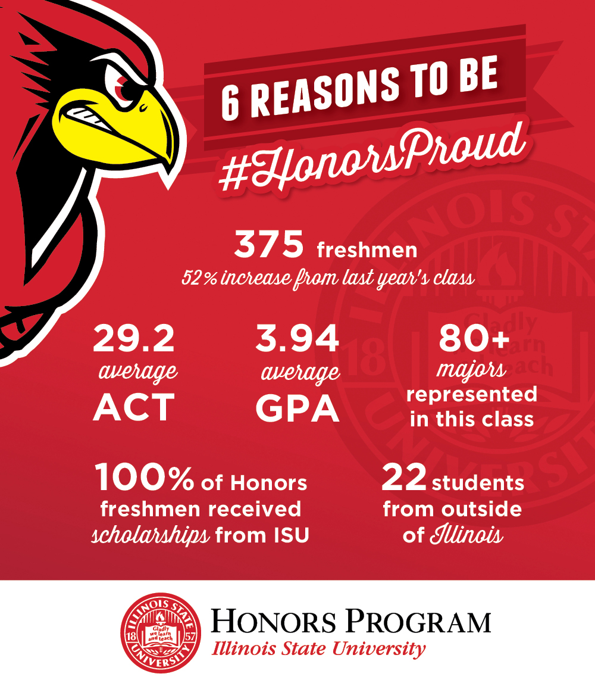

CTK Requirements

Retention Requirements
- Sequence in Audio and Music Production and Interdisciplinary Technologies - Students will be allowed to continue in this sequence if they meet and continue to maintain an overall cumulative GPA of 2.00.
- Sequence in Game Design - Students will be allowed to continue in this sequence if they meet and continue to maintain an overall cumulative GPA of 2.50 and a cumulative GPA of 3.0 within the major. Additionally, students in the Game Design Sequence must maintain consecutive Fall–Spring enrollment in their final at the University. Any student not enrolled at the university for more than one semester must reapply to the sequence. Students who leave the Sequence in Game Design may continue as a Creative Technologies major in Audio and Music Production or Interdisciplinary Technologies if they have an overall cumulative GPA of 2.00.
Standards for Progress in the Major
Students will be allowed to continue in the Creative Technologies program if they met and continue to maintain a cumulative GPA of 2.50 and have demonstrated competency through an intermediate portfolio review.